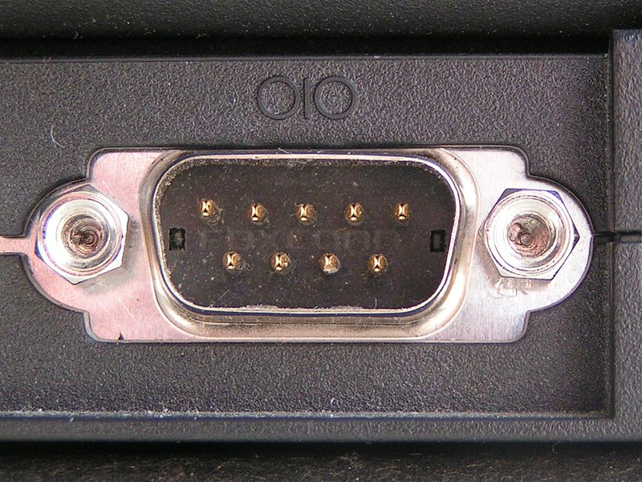
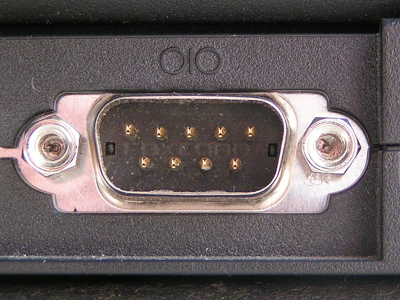

RS-232 (parfois appelée EIA RS-232, EIA 232 ou TIA 232)
est une norme standardisant une voie de communication de type série.
Disponible sur presque tous les PC depuis 1981 jusqu'au milieu des
années 2000, il est communément appelé le « port série ».
Sur les systèmes d'exploitation MS-DOS et Windows,
les ports RS-232 sont désignés par les noms COM1, COM2,
etc. Cela leur a valu le surnom de « ports COM »,
encore utilisé de nos
Il est graduellement remplacé par le port USB depuis
l'apparition de ce dernier, et le port RS-232 n'est
désormais plus employé que dans des applications
professionnelles particulières.
En savoir plus
 
